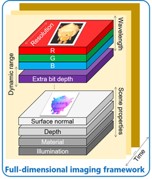

Our group has abundant funding and advanced equipment to conduct cutting-edge research.
We thank all funding agencies who have ever provided generous support to our research.
Research Topics

We study image and camera. When real world 3D scene is captured by a camera, it will be projected as a 2D image. To computers, an image is just an array of pixels. Every pixel tells a story. But the 2D image from a conventional camera makes the story over-simplified. The ordinary image can only tell us about the color in R, G, and B. Actually the story behind each pixel is rather complicated. The light travels with time, interacts with the geometry and material of the object before a pixel is formed. During the image formation process, there are lots of information gets lost. Then, what have been lost and how to get them back?
A conventional image has three layers. But we can actually have each pixel tell us more, for example the surface normal and depth for each pixel. We can have more pixels in the image which extends the resolution. We may have additional color channels beyond RGB or even the visible spectrum along the wavelength axis. We can also use additional layers with extra bit depth to extend the dynamic range. We can also use each pixel to encode the material properties; similarly we can let each pixel tell us about where and how the light comes from. There can be many more additional channels to represent diverse scene properties. We may also unwrap the image along the time dimension to tell how the light transport with time before it forms an image.
We call this full-dimensional imaging framework. By capturing and analyzing such a generalized image, we solve fundamental problems in computer vision and computational photography through camera intelligence that combines visual computation and camera innovation to understand the real 3D world. To be more specific, we conduct research on photometric stereo (surface normal layer), high-resolution depth sensing (depth layer), high dynamic range imaging (extra bit depth layer), super resolution (extend along resolution axis), material recognition (material layer), time-resolved imaging (extend along time axis), and so on.